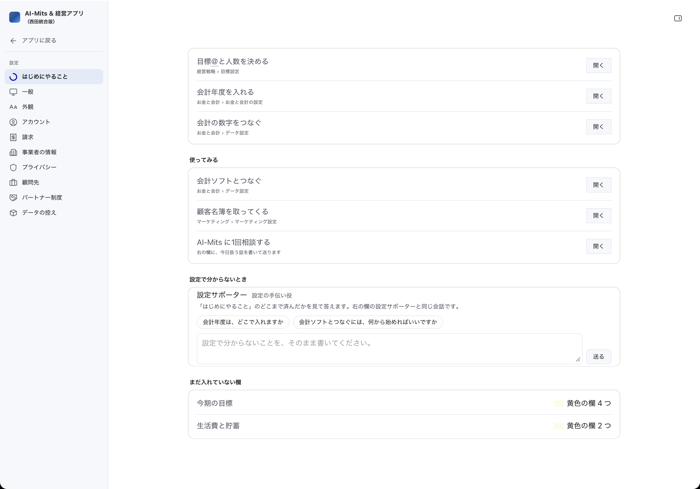

取得前・取得後と、お使いのパソコンから選べます
未定
今のMac版：取得から最初に開く画面まで
- 決済のあと届く案内から、今のMac版を取得します。
- ファイル名「untendai_（版）_mac.pkg」を開きます。今ご案内する版は2.0.5とする下書きです。届いた案内の版とファイル名を確かめてください。
- 案内に従って入れ、最初に開く「はじめる前に」を確認します。そのあと「見本の数字で動かす」を選び、AI-Mitsへ一つ相談する案です。
取得と最初の画面の対応は未定です。メールアドレス登録だけでアプリを取得できることを確約する案内ではありません。
ダウンロードは、短い動画・3、40分の動画・LEVEL 1 のレターのあと、竹の30日お試しの決済が終わってからになります
未定 今のダウンロードのページはメールアドレスだけで落とせる作りです。決済を挟まない流れにするかは未定
今入れる版：2.0.5（Mac）
MacはAppleシリコン（M1以降）、macOS 13以降、メモリー8GB以上、空き容量1GB以上を対象とします。AI相談と数字の取得には通信が必要です。
メールアドレスを登録して動画を見る（無料）このあと：短い動画 → 3、40分の動画 → LEVEL 1 のレター → 30日お試しの申し込み
入れたあとは「見本の数字で動かす」を選び、AI-Mitsに1つ相談してみてください。
根拠：/Users/nishidamitsuhiro/My Drive/claude-nishida/MITS-ALL/経営プロジェクト/経営の運転台/help_v1820/account.html 更新日2026-11-25／版2.0.5。初めての方への版の指定・取得先との対応・Macの条件：案（参謀が書いた下書き）
もっと見る（以前の版・確認版・協力者向けの説明）
ダウンロード
お使いのパソコンで、まず見本を開けます
MacとWindowsのダウンロード先と入れ方をご案内しますので、起動したら見本の数字で気になる機能を見てください。
メールアドレスを登録して動画を見る（無料）このあと：短い動画 → 3、40分の動画 → LEVEL 1 のレター → 30日お試しの申し込み使い始めの流れを見る

見本のデータ・版 2.0.5 のヘルプの写真根拠：このページの既存の説明・掲載写真から作成した見出しと紹介文
根拠：Obsidian・Things
Windows
MacでもWindowsでも使えます
経営アプリは、MacとWindowsに対応しています。
ダウンロードについての説明から、お使いのパソコンに合うアプリを選んでください。
まず見本の数字で、画面と使い方を確かめられます。
根拠：今のダウンロードページ「入れ方」
入れ方
案内を見ながら、アプリを入れられます
ダウンロードのページで、ご自分のパソコンに合うアプリを選んでください。
そのページの説明に沿ってアプリを入れ、起動します。
最初に表示される確認事項を読んだら、見本の数字から使えます。
根拠：今のダウンロードページ「はじめての方へ」
はじめは見本の数字で
自分の数字を入れる前に、画面を見られます
まず見本の数字で、何が見えるかを確かめてください。
目標、お金、お客様、時間の画面を見ながら、ご自分の事業なら何を知りたいか考えられます。
使いたいところから設定と取り込みを進めて、ご自分の数字に変えていけます。
ダウンロードする
→ 行き先：メールアドレスの登録ページ
メールアドレスを登録して動画を見る（無料）このあと：短い動画 → 3、40分の動画 → LEVEL 1 のレター → 30日お試しの申し込みダウンロードから起動まで、案内を見ながら進められます
ダウンロードについての説明に、取得先と入れ方をまとめています。
気になった画面を、ご自分のパソコンでも見てみてください。
使い始めるときの流れは、使い方のページでも確かめられます。
何を見たいか決まったら、自分の数字に進めます
最初は見本の数字で使ってみて、何を比べたいかが分かってから、必要な設定と取り込みを進めてください。
会計を見たい方は会計年度・分類・会計ソフトへの接続を、お客様との関係を見たい方は取り込む情報と知りたい変化を確かめます。
設定で迷ったら設定サポーターに画面名としたいことを伝え、自分の数字が見えたらAI-Mitsに相談できます。
根拠：01_The Innovation/_wip/linchpin_nou_no_naka_20261005/経営アプリ_untendai_benefit_baf_20261101.html、01_The Innovation/mits-reports/private/mifge-20261012/経営アプリ_letter_zentai_shitagaki_20261011.html、02_AI-MITS/_wip/settei_supporter_tuning_20261104.html
Mac・Windowsのダウンロード先と対応環境をご確認ください
Windows と Mac のデスクトップアプリです。お使いのパソコンに入れて使います。ブラウザは要りません。
メールアドレスを登録して動画を見る（無料）このあと：短い動画 → 3、40分の動画 → LEVEL 1 のレター → 30日お試しの申し込み
根拠：UTAGE AI-Mitsファネル（oHtrsl52qpXg）
参照用：古いMac形式（tar.gz）の案内
参照用：古いMac形式（tar.gz）の入れ方
untendai.app.tar.gz（約8MB）が落ちます。
ダブルクリックすると untendai.app が出ます（Safari は落とした時点で自動で開いていることがあります）。
その untendai.app を アプリケーション フォルダにドラッグしてから、ダブルクリックで開いてください。
Mac は Apple の開発元確認（Developer ID・公証）を通しています。初回だけ「インターネットからダウンロードされました。開いてもよろしいですか」が出ることがあるので、開く を押してください。
根拠：UTAGE AI-Mitsファネル（oHtrsl52qpXg）
公開の案内で、Windowsへの入れ方を見られます
untendai_x64-setup.exe が落ちます。ダブルクリックすると入ります。
「WindowsによってPCが保護されました」と出たら 詳細情報 → 実行 を押してください。
根拠：UTAGE AI-Mitsファネル（oHtrsl52qpXg）
起動したら、見本の数字で使ってみてください

2番目の画面で、どちらで動かすかを選べます。
「見本の数字を入れると、全部の画面と AI-Mits をすぐに試せます。あとから何度でも入れ替えられます。」と書かれ、2つのカードから1つを選びます。初めは見本の数字で動かすに印が付いています。
| カード | 選んではじめるを押すと |
|---|---|
| 見本の数字で動かす（架空の会社の会計・顧客・商品） | 架空の会社の数字を入れてから始めます。数字が入った状態で、全部の画面と AI-Mits を試せます。 |
| 空のまま始める（自社のデータを入れてから見る） | 何も入れずに始めます。各画面には「まだ数字が入っていません」の帯が出ます。 |
‹ 戻るで1段目に戻れます。どちらを選んでも、あとから自社データにする → サンプルデータについてで、入れたり消したりできます。
根拠：UTAGE AI-Mits＆経営アプリ 使い方・規約（8C5HLu4KXdfY）
確認版をWindowsに入れる手順をご覧ください
確認版のダウンロードページにある手順と写真をご紹介しますので、上の公開案内とはファイル形式が違う点もご確認ください。

メールで届く案内に従って、Windows版をダウンロードしてください。

ブラウザのダウンロード一覧にある untendai_（版の数字）_x64-setup.exe を押して開いてください（写真はChromeです）。

「untendai セットアップへようこそ」で「次へ」を押してください。

「インストール先の選択」はそのままで、「次へ」を押してください。

「インストールの完了」で「次へ」を押してください。

「untendai セットアップの完了」で「完了」を押すと、運転台が開きます。

初めて開いたときは「はじめる前に」が出ますので、「はじめる」を押してください。
メールアドレスを登録して動画を見る（無料）このあと：短い動画 → 3、40分の動画 → LEVEL 1 のレター → 30日お試しの申し込み
根拠：UTAGE AI-Mitsファネル（PhVVUAIonv5b）
確認版をMacに入れる手順をご覧ください
確認版のダウンロードページにある手順と写真をご紹介しますので、上の公開案内とはファイル形式が違う点もご確認ください。

メールで届く案内に従って、Mac版をダウンロードしてください。

ダウンロードした untendai_（版の数字）_mac.pkg をダブルクリックし、この画面で「Continue」を押してください。

「Install」を押してください。
メールアドレスを登録して動画を見る（無料）このあと：短い動画 → 3、40分の動画 → LEVEL 1 のレター → 30日お試しの申し込み
根拠：UTAGE AI-Mitsファネル（PhVVUAIonv5b）